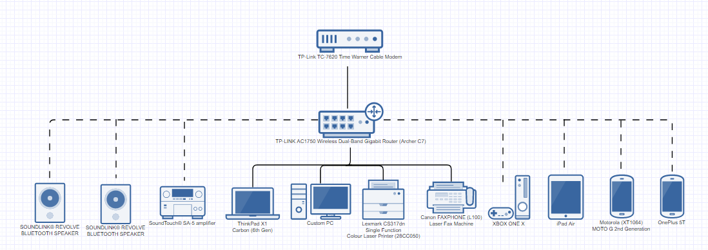

Encoding my Name
Adapting to New Technologies
Home Network
Emerging Technology
Favourite Piece of Technology
Encoding my Name| ASCII | Decimal | Binary | Octal | Hexadecimal |
|---|---|---|---|---|
| Hannah Guo | 72-97-110-110-97-72 71-117-111 | 01001000-01100001-01101110-01101110-01100001-01101000 01000111-01110101-01101111 | 110-141-156-156-141-110 107-165-157 | 48-61-6E-6E-61-48 47-75-6F |
Adapting to New TechnologiesWith new hardware and software technologies constantly being developed, companies and individuals must to alter their work styles in order to adapt. Although one would think that this ‘new’ technology is always better, there can be some hiccups along the way.
| Pros | Cons |
|---|---|
|
|
One example of adapting to new technologies that I’ve experienced personally is through the change in the programming libraries in FRC. For the past few years, FRC’s Java programming library has included all features for speed controllers and basic robot features. However, this year, the functions for speed controllers were separated into another library. In addition, many function names were changed. It took our programmers a while to get used to the changes. The new libraries were still a work in progress for their developers, but provided many new unique features. This change in technology was confusing at first, but in the end was worth the change.
Home Network
Description
This is an example of a possible home network. Since not many devices are connected, this is the network of a small house or apartment (and not a business network or one of a mansion). It’s fairly simple and straightforward. All the devices are connected to the router, which creates a network. The router is connected to the modem, which connects that network to the Internet.
The speakers, amplifier, Xbox, iPad, and smartphones connect to this network via Wi-Fi. Meanwhile, the laptop, PC, printer and fax machine connect to the network using an ethernet connection. The router used has multiple ethernet ports, so an ethernet switch/hub isn’t necessary.
The Importance of Networks
It’s important to have a proper network setup because it minimizes the hardware necessary, and optimizes the network’s performance. For example, ethernet hubs and switches are often unnecessary for home networks as the router provides several usable ethernet ports.
Emerging TechnologyDescription
On September 12th, 2017, Apple announced a new biometric authentication technology known as Face ID. Currently only implemented on the iPhone X. FaceID is a facial recognition software designed to replace Touch ID on the iPhone X’s full-screen display. It even works under conditions such as low light areas or if the user is wearing sunglasses. Face ID uses a combination of infrared emitter and sensor (what Apple calls TrueDepth) that plots about 30 000 points on your face. By using the reflection of these points, the software calculates the depth and angle of each point. From there, it creates and saves a map of the user’s face. When you wake up your phone from its sleep, it scans your face and compares it to this map. It will only unlock if your eyes are open and are directly looking at the phone, so you won’t unlock it accidentally. In addition, Face ID uses machine learning technology to adapt to your age and other physical changes such as a haircut.
BenefitsFace ID provides a fast way of unlocking a phone without using a physical sensor. This gives more room for the display, making full-screen phones like the iPhone X possible. It also allows for cool features, such as Animoji, to be available to the user. Face ID also supports third-party app development by providing APIs. Face ID can also be used as authentication for the various services like iTunes and Apple Pay. Using the user’s face as a password frees their hands to do other tasks, which increases productivity.
DrawbacksThe largest elephant in the room when it comes to Face ID is privacy. Although Face ID stores maps locally, a simple government policy change would require Apple to share this information with the government. This would allow them to use Face ID’s data to track people through security cameras and other surveillance. However, this isn’t very likely, at least not with the iPhone X, due to the way Apple created the technology.
ConclusionWhen this technology was released, people also questioned how consistently it would perform, and how foolproof it was. Currently, there haven’t been any large breaks in Face IDs software, and Apple is continuing to develop it as well. Overall, with how accurate and practical Face ID and facial recognition technology are becoming, we may indeed be looking at the future of authentication.
Article Link
Favourite Piece of Technology


Github is the largest online code-sharing service. It allows programmers to collaborate together on projects, receive feedback from their users, and control versions of their code. It's also a place where developers can make their code available to the public (open-source) as a reference for others. Currently, Github reports having 27 million users and 77 million repositories (projects). Even organizations use this service, including NASA, the NSA and Apple use Github.
I personally use Github almost daily for robotics to work together with my programming team. It makes coding in general much easier and also allows members of the team to share and work together. Also, this year, software for the robotics libraries are all hosted on Github, opposed to last year when all the information was in multiple PDFs. The clean interface and design of the Github documents are also much nicer and make it easier to read through.
Github also has many other features for student developers, which gives them the tools they need to properly build their program. In fact, this website is hosted on Github Pages, which is a free hosting website that Github provides. It links directly to the Github repository as well, meaning no external hosting service is required.
As our society becomes more technologically-driven, more and more programmers are creating software for our everyday lives. Github allows these great minds to work together to code the programs for our future. This can already be demonstrated during hackathons, where programmers work together to create a hack for a real-world problem. I've seen hacks created to help those with disabilities, to monitor nutrition and to educate younger students.
Overall, without Github, organizing code projects would be much more tedious for me, and for all other programmers working on software that will shape the future. It makes software development so much easier to manage and I can't imagine how today's programmers would manage without Github's features. This is why Github currently my favourite piece of technology.